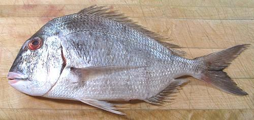

Red Seabream

[Pink Porgy (Market), Japanese Seabream; Madal (Japan); Ch'amdom
(Korea); Pagrus major]
This is a very desirable eating fish. It is a West Pacific fish found
from northern Vietnam up the coast to southern Japan and Korea, but is
not found around the Philippines. It can grow to 39 inches, but is most
commonly around 12 inches. The photo specimen was 13-3/8 inches long and
weighed 1 pound 3-5/8 ounces. This fish is IUCN Red Listed as LC (Least
Concern). It is caught wild, but is also extensively farmed. This is the
second most heavily farmed fish in Japan.
More on Porgys and Seabream.
Red Seabream is a very prestigious fish in Japan, served on many
important occasions and sold at a high price. It is also very popular
in Taiwan. The flesh is near white, with a moderately light and quite
pleasant taste. It is pan fried, steamed, broiled and baked. for cooking
as whole or pan dressed fish, the skin must be slashed with diagonal
cuts about 1 inch apart, because skin shrink is severe.
I usually prepare this fish as skinless fillets and pan fry with a
light dusting of rice flour. To best enjoy the excellent flavor of this
fish, it should not be heavily battered, and should be eaten with a
lightly flavored sauce. I use a light white wine, lemon juice and butter
sauce. Skinless fillets can be gently poached, but that's about all the
wet cooking this fish can take.
If you want to make a really good fish soup or stew (for which the
flesh of this fish is useless) you could buy a few, fry up the fillets
for supper and use the heads, bones, fins and skins to make stock. See
our Making Fish Stock
page for how to keep the stock for weeks without clogging your freezer
compartment.
Buying:
Red Seabream (Pink Porgy) occasionally appears
in the Asian fish markets here in Southern California. The photo specimen
was purchased from a Philippine market in Los Angeles (Eagle Rock,
actually) as "Pink Porgy" for 2016 US $2.99 / pound. It's said to be
much more expensive in Japan.
Scales:
This fish is covered with large scales with
medium adherence - not real hard to scrape off but they will fly around
quite a bit. They are thin, and some will capsize or otherwise need to
be pulled off with long nose pliers. They are also invisible, so it's
hard to tell if you got them all.
Cleaning:
This fish is a little more difficult to clean
than some because of tough membranes in the body cavity. The gills
pull a bit hard and are hard to get at because the gill slits are small.
You'll be glad you have a sturdy pair of long nose pliers.
Skin:
Skin shrink is extreme and relentless. It doesn't
let go until fully cooked. Fillets must be skinned for any method of
cooking. The skin is tough, so it's fairly easy to remove using the
standard long knife and cutting board
Method. The skin does not have a
strong flavor and should be added to the stock pot along with the
heads, fins and bones to add body to the stock. If you steam, bake,
broil or grill this fish, make shallow diagonal cuts through the skin
about 1 inch apart so it doesn't tear itself up and look ugly.
Fillet:
This is a fairly easy fish to fillet with a
coherent, easy to follow bone structure. There is a hard bone at the
back of the body cavity that attaches hard to the front tip of the anal
fin and can be in the way. Cut down to the backbone, then over the
backbone at the tail and forward. When you get to the rib cage, use
kitchen shears to cut the ribs from the backbone, then pull them from
the fillet with long nose pliers. There are very substantial centerline
pin bones which must be pulled for a little more than the length of the
body cavity, but they are easy to find in the soft flesh and pull
easily.
Yield:
Yield is good, but not spectacular because of
the heavy head and bones, which is what you would expect from a fish
that makes its living crushing mollusks and crustaceans. A 1-1/2 pound
fish will yield abut 10.2 ounces of skin-on fillet (43%) or 8.9 ounces
skin-off (37%). On the other hand, all that "scrap" makes an awesome
fish stock.
Stock:
The head, bones, fins and skin make an excellent
light colored stock with a medium light flavor. It is so good it needs no
other flavoring except a little salt. Remove the small amount of oil using
your gravy separator. For details see our
Making Fish Stock page.
sf_porgypz* 160108 - www.clovegarden.com
©Andrew Grygus - agryg@clovegarden.com - Photos on this
page not otherwise credited are © cg1 -
Linking to and non-commercial use of this page permitted